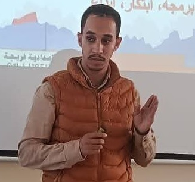
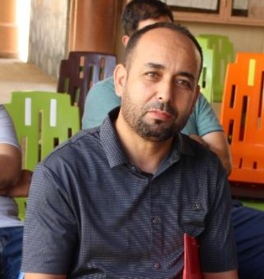

أسئلة متنوعة ومواضيع باللغتين ومجلدات متداخلة وإسناد الفرض إلى عدة أقسام.
تقويم تشخيصي مستقل عن الفروض المحتسبة في المعدل.
تتبع إجراء الفروض وتصحيح الأسئلة المفتوحة ونشر النقط وطباعة أوراق الإجابة.
شبكات التقويم التطبيقي وسلم التنقيط وحساب المجاميع.
03
قسم يتفاعل
حوّل كل سؤال إلى فرصة للتعلّم.
بنوك أسئلة وحصص محددة بالوقت واستقبال الأجوبة بشكل مباشر.
مشاركة فردية أو حسب المجموعة والمحطة باختيار الأستاذ.
نتائج وترتيب يمكن إظهاره للتلاميذ وأنشطة على شكل تحديات.
دروس مباشرة وعروض شرائح يتحكم فيها الأستاذ ومشاركة الشاشة حسب المتصفح والإعدادات.
04
التخطيط التربوي
حافظ على وضوح المسار من أول حصة إلى آخر حصة.
استعمال الزمن حسب القسم والمادة والتوقيت.
برنامج سنوي يراعي العطل وفترات الفروض.
استيراد عناوين الحصص وأهدافها من Excel وتتبع التقدم وغياب الأستاذ وحصص التعويض.
دفتر النصوص والسيناريوهات التربوية والوثائق القابلة للطباعة.
05
النقط والتتبع والدعم
افهم النتائج لتواكب التلاميذ بشكل أفضل.
المعدلات ونقط الأنشطة والنتائج حسب المادة.
إحصائيات حسب القسم والسؤال لتحديد مواطن الصعوبة.
الغياب المبرر وغير المبرر والتأخر والمشاركة والتحفيز والسلوك.
منحنيات التقدم والمقارنة بين الدورتين.
06
فضاء مناسب لكل مستخدم
منصة واحدة واستعمالات متكاملة.
فضاء التلميذ: الفروض والنقط وأوراق الإجابة والبرنامج السنوي والورشات المسموح بها، عبر متصفح متوافق.
دروس ووثائق منظمة في مجلدات وبوابة للأنشطة والأندية واستعمالات زمن قابلة للنشر.
فضاء للاطلاع خاص بالمدير أو المفتش عبر رمز الأستاذ.
تدبير الاتصالات والولوج إلى الموارد بحسب الأدوار.
تقويم من أجل التقدم
أبعد من النقطة، فهم الحاجيات.
شاهد المشاركة وقارن نتائج الأقسام وحدد الأسئلة التي تستدعي العودة إلى مفهوم معين. يصبح التصحيح نقطة انطلاق للدعم والمعالجة.
شاهد أدوات التقويملقطات من التطبيق؛ القيم تعرض سياق استعمال، وليست نتائج موعودة.
نتعلم بالممارسة.
11 مختبراً. أفكار تتحول إلى ممارسة.
برمجة وتركيب ومحاكاة وتجريب. ورشات مدمجة للعمل الفردي أو الجماعي، وتتبع الإنجازات وتقويمها.
تعلّم هادف، وليس مجرد شاشات.
أنت من يوجّه التعلّم.
يختار الأستاذ الورشات المتاحة والأقسام المعنية والتعليمات. ولا تظهر للتلاميذ إلا الأنشطة المسندة إليهم.
بيئات محاكاة تربوية مدمجة. الأسماء المذكورة توضح المهارات المستهدفة، دون ادعاء أي انتساب للعلامات التجارية.
شبكة القسم تكفي.
قد ينقطع الإنترنت. ولا تتوقف حصتك.
يمكن تثبيت EduClasse على حاسوب الأستاذ بنظام Windows. يتصل التلاميذ بالخادم المحلي عبر المتصفح، وتبقى الوظائف المحلية متاحة دون اشتراك إنترنت.
حاسوب الأستاذEduClasse والخادم المحلي
Wi-Fi / Ethernetشبكة القسم المحلية
التلاميذمتصفحات على أجهزة متوافقة
تبقى المعطيات في حاسوب الأستاذ. احرص على نسخ احتياطية خارجية.
المطلوب: شبكة محلية مضبوطة وخادم مشغّل وتراخيص الجدار الناري. تحتاج الموارد والخدمات الخارجية إلى الإنترنت.
انطلاقة واضحة ومواكبة
من حاسوبك إلى القسم بأكمله.
مدير تشغيل على Windows لتشغيل الخادم وتنظيم المواسم الدراسية وحماية العمل المنجز.
01
التثبيت والتفعيل
ثبّت نسخة Windows بخادم مدمج دون XAMPP منفصل، ثم استورد التفعيل الخاص بالحاسوب.
02
ربط القسم
اضبط الشبكة الخاصة واحجز IP حاسوب الأستاذ وشارك الرابط أو مشغّل التلميذ.
03
التحضير والتنشيط
استورد اللوائح وخطط الحصص ووزع الموارد وأطلق الأنشطة.
04
التتبع والحفظ
حلل واطبع وأنجز النسخ الاحتياطية واسترجعها. احتفظ بالمواسم منفصلة وانسخ المحتويات المختارة إلى الموسم الجديد.
المنصة كما هي.
اكتشف EduClasse من الداخل.
تصفح اللقطات الحقيقية واضغط لمشاهدة أي واجهة بشكل أوضح.
لوحة قيادة الأستاذ↗استيراد Excel مسار↗تصدير النقط إلى نموذج مسار↗إعداد فرض↗بنوك الأسئلة المباشرة↗السؤال كما يراه التلميذ↗بث الدروس المباشرة↗استعمال الزمن↗البرنامج السنوي والعطل↗دفتر النصوص↗السيناريوهات التربوية↗الإحصائيات وتوزيع النقط↗تحليل صعوبة الأسئلة↗الخوارزميات↗الشبكات↗XLogo↗محاكاة Excel↗تركيب الحاسوب↗الكتابة بلوحة المفاتيح↗محاكي سطح المكتب↗الموصلات والمنافذ↗Python↗HTML · CSS · JavaScript↗الروبوتيك · Arduino↗
مشروع تربوي من قلب الممارسة
أساتذة وراء كل أداة.
تصميم وتطوير ومواكبة تربوية، من فريق يعرف حاجيات القسم.

BIDOUH Lahcen
التصميم والتطوير
BOUSBAA Rachid
التتبع التربوي والاختبارات

AIT ELHAJ Mohamed
التتبع التربوي والاختبارات
أسئلة مهمة قبل الانطلاق
نجيب عن أسئلتك.
هل تعمل EduClasse فعلاً بدون إنترنت ؟
نعم بالنسبة للوظائف المحلية والمختبرات المرفقة: يستضيف حاسوب الأستاذ الخادم ويتصل به التلاميذ عبر شبكة القسم Wi-Fi أو Ethernet. الشبكة المحلية تبقى ضرورية؛ بدون إنترنت لا تعني بدون شبكة. الروابط والفيديوهات والخدمات الخارجية تحتاج إلى الإنترنت.
ماذا يجب تثبيته في حواسيب التلاميذ ؟
يكفي متصفح للولوج إلى المنصة عبر الشبكة المحلية. ويمكن لمدير التشغيل على Windows إنشاء ملف exe صغير يفتح الرابط في المتصفح؛ ويعتمد هذا المشغّل على .NET Framework. يبقى الخادم والمعطيات في حاسوب الأستاذ.
هل تعوض المختبرات البرامج والأجهزة الحقيقية ؟
هي بيئات محاكاة تربوية مدمجة في EduClasse تساعد على التدريب وتقويم المهارات، وليست البرامج التجارية أو الأجهزة المادية التي تحاكيها.
هل يمكن استعمال ملفات Excel مسار ؟
تتيح المنصة استيراد وتصدير ملفات Excel، خاصة لوائح التلاميذ والنقط. يتعلق الأمر بتبادل الملفات، ولا يعني اعتماداً رسمياً أو مزامنة تلقائية مع خدمة وزارية.
كيف أحافظ على المعطيات من موسم إلى آخر ؟
يوفر مدير التشغيل على Windows النسخ الاحتياطي والاسترجاع والمواسم الدراسية المنفصلة ونسخ المحتويات بشكل انتقائي. احتفظ أيضاً بنسخة احتياطية على وسيط خارجي. تواصل مع المطور بخصوص شروط التفعيل والانتقال إلى حاسوب آخر.
كيف أطلب عرضاً أو أتعرف على شروط الاستعمال ؟
تواصل مع لحسن بيدوح عبر الهاتف أو البريد الإلكتروني أو WhatsApp، مع توضيح المؤسسة والتجهيزات والحاجيات. لا تفترض هذه الصفحة أي تسعير أو التزام مسبق.
لنتحدث عن حاجياتك.
حصتك القادمة تبدأ من هنا.
سؤال، أو عرض للمنصة، أو مشروع لمؤسستك؟ لنتواصل مباشرة حول حاجياتك.